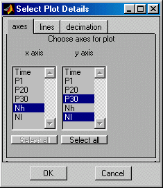

| User Function Reference |
|
Generate a tabbed, scrolled list dialog.
Syntax
Selections = listdlg2(Lists) Selections = listdlg2(Lists, Title) Selections = listdlg2(Lists, Title, Mode) Selections = listdlg2(Lists, Title, Mode, Default)
Description
listdlg2 displays columns of choices in a resizable figure window.
The choices selected by the user are returned as a structure vector Selections.
The length of Selections is nTab, each element corresponding each tab.
Selections.index is a cell vector, one cell per column, each listing
the indexes of the choices made from that column. Selections.tab
is an integer index of the tab to which these apply - this will match
the index of Selections unless Mode=1.
Any [], entries indicate no selection made, Selections.index=[] &
Selections.tab=0 if no selection is made.
Selections = listdlg2(Lists) where:
Lists is a structure vector (length=no_tabs) containing fields:
.tag - a string tab label
.title - a title for the tab page
.name - a string cell vector of column names
.list - a cell vector of string cell vectors of choice item names
.mode - selection modes : 0 for mutiple (default) or 1 for single -
Mode=1 -> only 1 from each column, it must have same no cols as .list
Selections = listdlg2(Lists, Title) where:
Title is a string title for the selection window.
Selections = listdlg2(Lists, Title, Mode) where:
Mode is tab selection mode : 0 for mutiple (default) or 1 for single -
i.e. Mode=1 allows a result from only 1 tab.
Selections = listdlg2(Lists, Title, Mode, Default) where:
Default is a structure vector (length=no_tabs) defining the choices
initially selected.
Default.index is a cell vector, one cell per column, each listing
the indexes of the choices to be set in that column. Use [] for none.
Default.tab is an integer index of the tab to which these apply (optional).
The form of Default is the same as the function output.
Examples
Example 1. A simple list dialog.
results(1).tag='axes'; results(1).title='Choose axes for plot'; results(1).name={'x axis';'y axis'}; vars={'Time';'P1';'P20';'P30';'Nh';'Nl'}; results(1).list={vars,vars}; results(1).mode=[1,0]; results(2).tag='lines'; results(2).title='Choose line styles for plot'; results(2).name={'category';'style'}; styl={'line style';'colour';'symbols';'style & colour'... ;'symbols & colour';'style & symbols';'all'}; results(2).list={{'engine type';'engine build';'test type'},styl}; results(2).mode=[0,1]; results(3).tag='decimation'; results(3).title='Choose marker decimation option'; results(3).name={'level'}; results(3).list={{'none';'10';'20';'all'}}; results(3).mode=1; tit='Select Plot Details'; deft(1).index={1,1}; deft(2).index={[1;2;3],[1;2;3]}; deft(3).index={1}; sel = listdlg2(results,tit,0,deft); xname=vars{sel(1).index{1}} ynames=strvcat(vars{sel(1).index{2}})
See Also
listdlg,
inputdlg,
inputdlg2,
menu,
selectdlg3,
tabdlg
|
|
selectdlg3 | inputdlg2 |
|